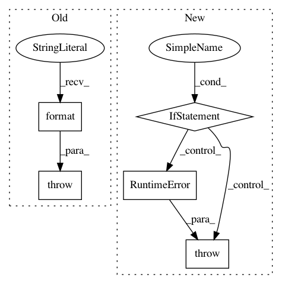

be8e63d4774207a94fa7d26f9f9e1f7f55f9e664,python/ray/tune/suggest/suggestion.py,Searcher,restore_from_dir,#Searcher#Any#,207
Before Change
if os.path.exists(checkpoint_path):
self.restore(checkpoint_path)
else:
raise FileNotFoundError(
"{filename} not found in {directory}. Unable to restore "
"searcher state from directory.".format(
filename=Searcher.CKPT_FILE, directory=checkpoint_dir))
@property
def metric(self):
The training result objective value attribute.
After Change
pattern = self.CKPT_FILE_TMPL.format("*")
full_paths = glob.glob(os.path.join(checkpoint_dir, pattern))
if not full_paths:
raise RuntimeError(
"Searcher unable to find checkpoint in {}".format(
checkpoint_dir)) // TODO
most_recent_checkpoint = max(full_paths)
self.restore(most_recent_checkpoint)
@property
In pattern: SUPERPATTERN
Frequency: 3
Non-data size: 5
Instances
Project Name: ray-project/ray
Commit Name: be8e63d4774207a94fa7d26f9f9e1f7f55f9e664
Time: 2020-08-10
Author: rliaw@berkeley.edu
File Name: python/ray/tune/suggest/suggestion.py
Class Name: Searcher
Method Name: restore_from_dir
Project Name: microsoft/nni
Commit Name: 7d1acfbd939f8e4f5aa9fceb2a47771157b09420
Time: 2020-12-10
Author: hzhua201@gmail.com
File Name: nni/retiarii/operation.py
Class Name: PyTorchOperation
Method Name: to_forward_code
Project Name: microsoft/nni
Commit Name: e0b692c96565074d4cb148e6011b2007d0a55348
Time: 2020-03-23
Author: Quanlu.Zhang@microsoft.com
File Name: examples/model_compress/model_speedup.py
Class Name:
Method Name: